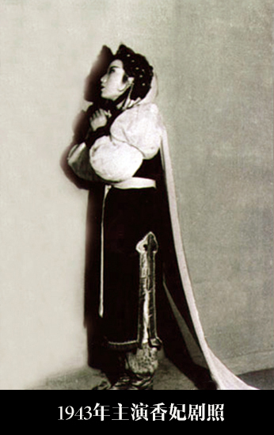

尺调
1943年11月由袁雪芬主演的《香妃》，是开始形成〔尺调〕特征音调（包括调腔、伴奏、托腔）比较明显的第一个剧目。该剧表现的是被清朝乾隆皇帝掳来的维吾尔族女子宁死不屈的故事。明快、活泼、朴实见长的〔四工调〕很难适应这一要求，为此，袁雪芬在琴师周宝财的合作下，采用京剧二簧的定弦，变〔四工〕，并吸收融化其稳重深沉的过门及〔二簧〕的音调，运用调式交替手法，丰富发展了低回婉转的下四度宫调系统的旋律。同时，放慢板速，产生了〔慢中板〕。此外，根据语言字调、音韵及人物感情的需要，在润腔方面也远较〔四工调〕细腻多采。
唱腔特征
与〔尺调〕相关的唱调主要有：
〔嚣板〕 借鉴绍剧〔二凡流水〕，以原〔四工调〕“中板散唱”为基础，合〔尺调〕而形成的整伴散唱。唱腔为前四后三两节的散板；伴奏为加快的中板过门，有板无眼，四分音符＝200，俗称“紧拉（打）慢唱”。用于表现悲愤、激情、奔放等感情。
〔男调〕 以〔尺调〕为基础糅合男班唱调形成。又因伴奏过门吸收绍剧“慢二凡”过门音调，也称〔二凡板〕。一板一眼，板起板落，句末一字唱一拍，也有唱三拍以上的，倒数第二字有唱一拍的，也有唱三至九拍的。腔句通常分前四后三两节，前腔节后多用同音（或加花）过门，后腔节句末吸收“慢二凡”伴奏音调的韵音过门，用于表现焦虑、彷徨或兴奋之情。
〔哭腔〕 〔尺调·哭腔〕以传统的〔四工调·哭腔〕为素材，连哭带唱，哭唱结合，灵活多样，是常用的单句体唱调。其中有归板落调哭腔尾音落2，散唱落调哭腔尾音落5，起调哭腔尾音落5。
〔起腔〕（亦称〔叫头〕） 〔尺调〕产生前，多用于招呼乐队起奏，如“走呀！”“夫人呀！”〔尺调〕产生后，〔起腔〕逐渐用于表现剧中人的思想感情。
〔落调〕 〔尺调·落调〕包含着越剧中所有的〔落调〕。即男班的2音〔落调〕，〔四工调〕的1音〔落调〕，〔尺调〕本身的5音〔落调〕。腔幅拉宽至五拍的称半〔落调〕。
〔二凡〕 借用绍剧基调。越剧多用〔尺调慢二凡〕。